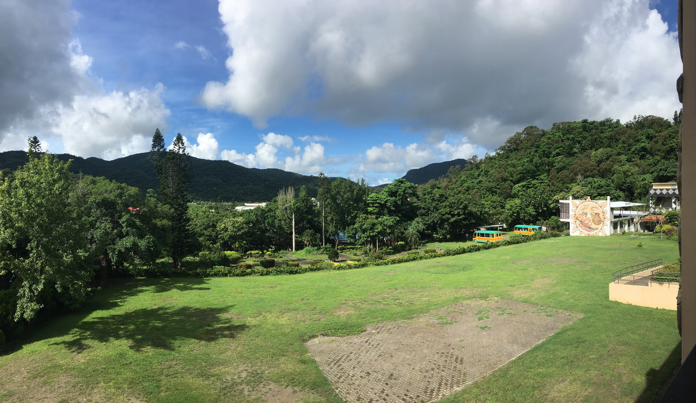

Mudan Township Junior High One-Year Anniversary
July 27, 2018
Mudan, Pingtung, Taiwan
Roughly one year ago to this day, I finished my summer abroad teaching English at Mudan Township Junior High in Pingtung, Taiwan.
I was found this opportunity through the Assisting Individuals with Disadvantages (AID) Volunteer Program. This program was a 4 week experience during which I learned how to design and execute lesson plans for junior high students, traveled to Southern Taiwan and taught a class of 17 amazing students, and went on a tour across the country.
Week 1
The first week of this program began on June 30th, 2017. I arrived at the Chientan Youth Activity Center in Taipei, Taiwan with my laptop, my GoPro, and a suitcase full of clothes. I was lucky to have a friend who I've known since we were children, Brian Shiau, participate in this program with me.
We spent most of our time hanging out and listening to music, watching movies, and playing card games with the friends that we made. It was so cool meeting other people with Taiwanese and Chinese parents from around the world. Our friend group ended up consisting of people who grew up in places as far as South Africa and Scotland!
Of course, in between all of the socializing and meeting new people, I also had to get some serious work done. Every day that week was jam-packed full of lesson planning sessions to prepare for the upcoming two weeks in which I'd be teaching English to first-time learners of the language. Balancing simplicity with substantive content in my lessons was the biggest challenge. I had to make sure that my lessons would be understood by beginner English learners, but also provide a meaningful education that could be used in real-life situations. On top of that, I had to create unique games for every lesson in order to make sure that my students stayed involved and were excited for every lesson throughout my two weeks with them. After a week of trial and error and rehearsing my lessons in front of my friends, I was finally ready to go to Mudan; I left Chientan at the end of that week equally nervous and eager to meet my students.
Week 2 & 3
I arrived at Mudan Junior High after a long bus ride across Taiwan. The first thing I noticed was how beautiful its campus was. Seriously, look at school's courtyard and the scenery surrounding it.

The rest of the day was spent preparing an intro video of ourselves to present to the student body. I ran around with my GoPro and eventually had enough footage of me and the other volunteer teachers to make a short "Friends" themed video. Mudan Intro Video With that finished, we settled into the house that they reserved for my fellow teachers and I. We prepared our lessons and did our best to get a good night's rest before our first day with our students.
These kids are awesome. I walked into my assigned classroom with my teaching partner and it felt like walking into a storm. All 17 of my students were singing songs, dancing, and throwing volleyballs around. It was 15 minutes before class was supposed to start, and everyone already had so much energy, or so I thought. The bell rang to signal the start of class, and my students finally realized that I was in the room. They quieted down in an instant.
My partner and I introduced ourselves and tried to talk to our students and find things that we could relate to them with. Almost every response we got were one or two word answers. They clearly weren't used to talking in the classroom. Regardless, we began our first lesson, and eventually made it to the end of school day. The final bell rang, and immediately the students regained the same energy that I saw in the beginning of the day before classes began. I knew they were intimidated of us, and I knew I had to change that.
Luckily, I had one thing that I could connect with them through: basketball. I put on my basketball shoes and walked over to the basketball court they had behind their dorms. I found 4 or 5 kids there, some of them in my class. They saw me, and none of the shyness that I witnessed in the classroom was present. This was their domain. I asked to play with them, and everything started to change for the better. By playing basketball with my students, all the barriers that existed between us vanished. This eventually translated into the classroom, and my students began to actively participate in all of my lessons. This showed me that you can connect with people from any part of the world by finding mutual interests. Sports did that for me here, and I'll never forget that lesson.
The rest of my two weeks in Mudan were some of the most eventful times of my life. I ate local food grown and prepared by my students' families. I went to culture festivals put on by my students that showcased the music, dance, and tradition of their indiginous-Taiwanese roots. I snorkeled in the ocean, hiked up mountains, and visited night markets for food and games. Most importantly, I bonded with my 17 students from the other side of the world who I'll never forget, and I hope to visit again in the near future. NOTE: add more pics here

This post is unfinished